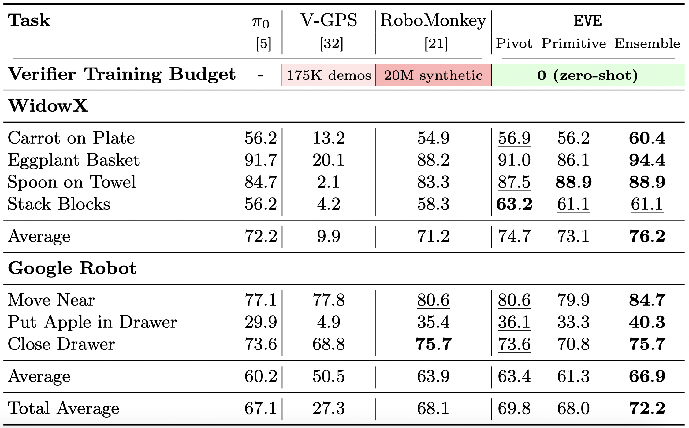
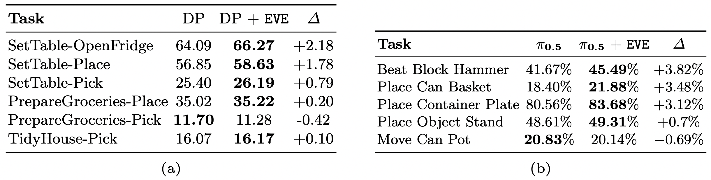
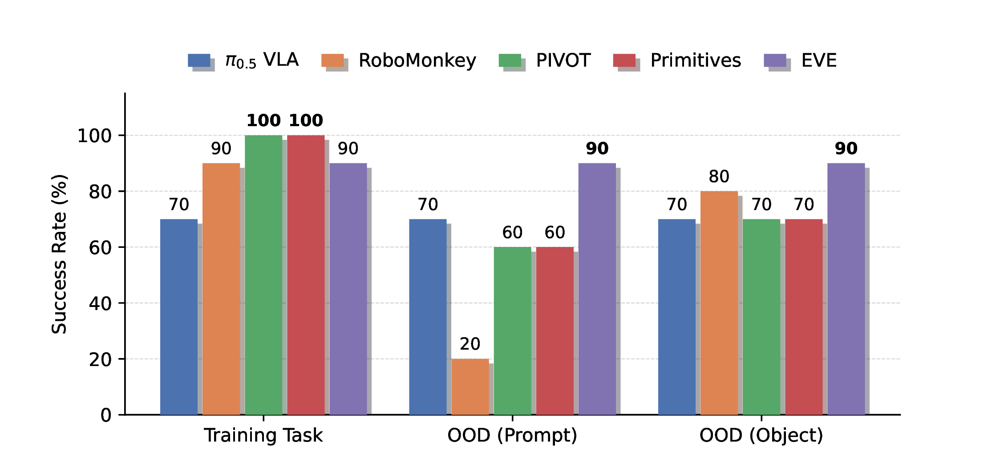
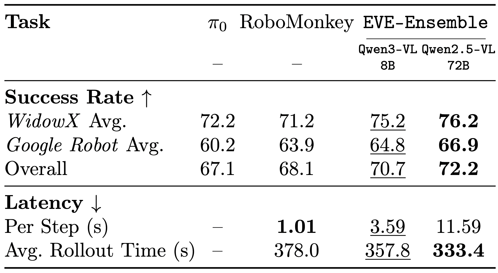
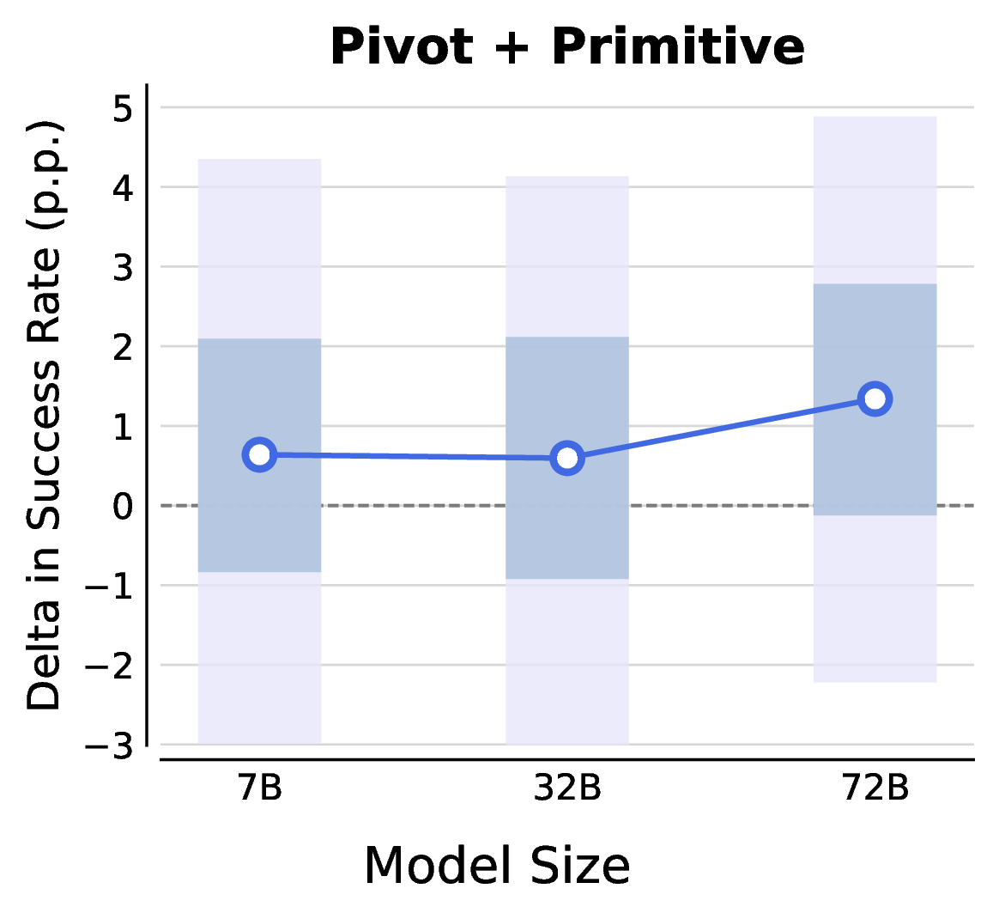
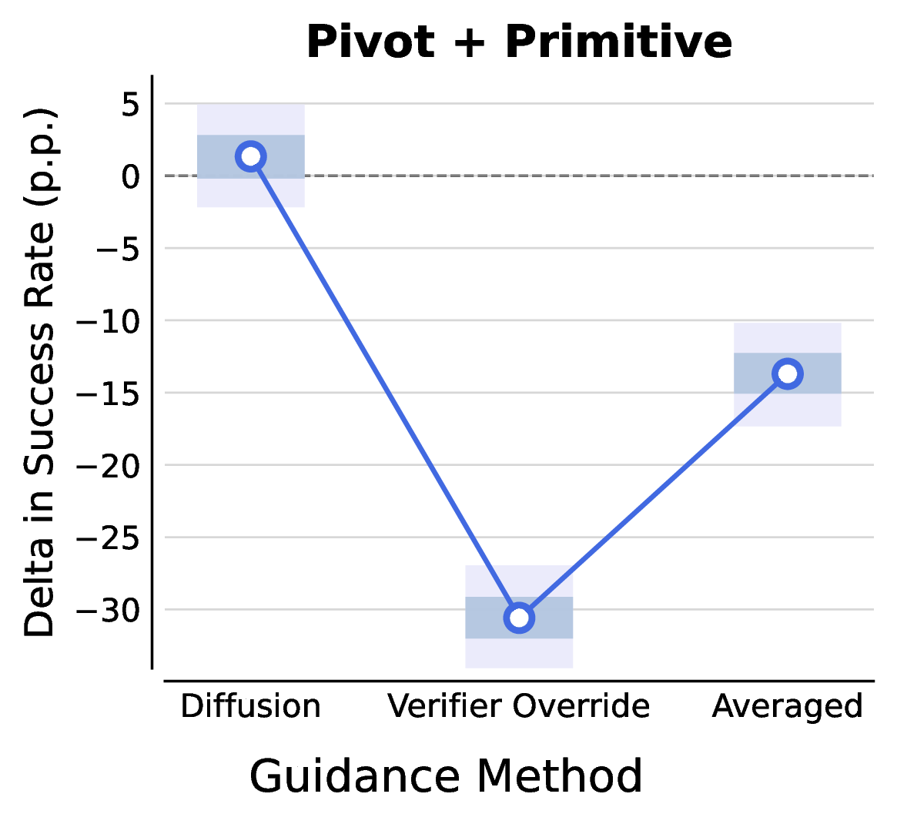
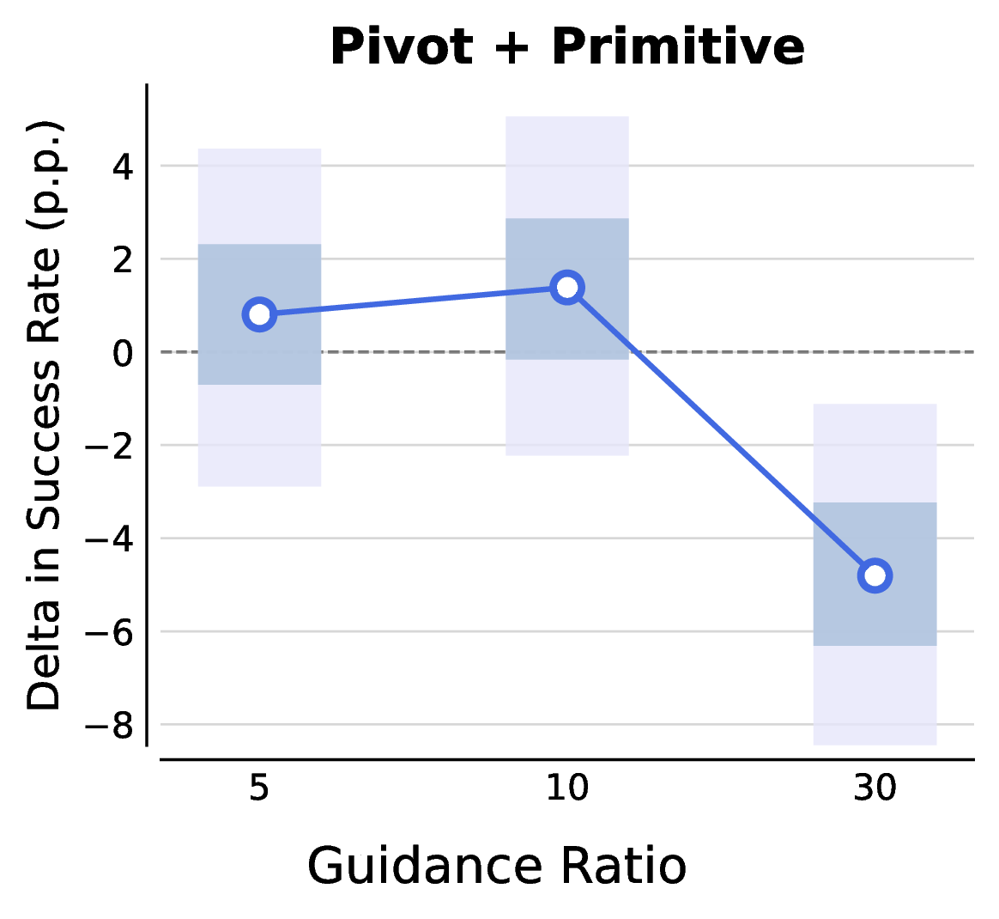

Results
Performance on SimplerEnv
On the SimplerEnv real-to-sim benchmark, EVE with training-free, zero-shot verifiers outperforms state-of-the-art finetuned verifiers. EVE-Ensemble attains the best total average success rate of 72.2, improving over the base policy π0 (67.1) and over trained-verifier baselines RoboMonkey (68.1, trained on 20M synthetic preferences) and V-GPS (27.3, trained on 175K demos) — while using zero training data. The largest gains concentrate on harder, lower-success tasks such as Put Apple in Drawer (29.9 → 40.3) and Stack Blocks (56.2 → 63.2).

EVE with training-free, zero-shot verifiers outperforms state-of-the-art finetuned verifiers on SimplerEnv. Bold is best, underline is second-best.
Generalization to Long-Horizon Mobile Manipulation & Bimanual Tasks
EVE generalizes to new embodiments and diverse tasks where trained-verifier baselines (RoboMonkey, V-GPS) are not applicable, since they require extensive in-domain training. On the ManiSkill-HAB long-horizon mobile manipulation suite (mean over 1008 rollouts), EVE consistently improves a base diffusion policy. On RoboTwin 2.0 with an Aloha AgileX dual-arm embodiment, EVE improves the π0.5 VLA.

(a) ManiSkill-HAB mobile manipulation. (b) RoboTwin 2.0 bimanual manipulation (π0.5 VLA).
Real-World Robot Experiments
We validate EVE on a real Franka Emika Panda arm. We finetune the π0.5 VLA on 50 demonstrations of placing two blocks into a bin, and evaluate on 5 tasks (10 trials each): 1 in-distribution task, 2 OOD-Prompt tasks (pick blocks in a specific order), and 1 OOD-Object task (pick coffee pod). EVE matches RoboMonkey in-distribution and achieves the best performance across all OOD settings via semantically-informed verifier-guided corrections, while RoboMonkey degrades sharply in the OOD-Prompt setting.

Success rate (out of 10 trials) on the real Franka robot.

Sample rollouts: verifier intervention and base VLA rollout continuation after EVE intervention.
Latency Analysis
EVE with a smaller but newer Qwen3-VL-8B backbone still outperforms RoboMonkey, suggesting gains scale with stronger VLM backbones. Although EVE has higher per-step latency, its MMD trigger invokes the verifier only when the action distribution deviates significantly — and it verifies at the action-chunk level — yielding a lower average rollout time than RoboMonkey, which scores actions at every timestep.

EVE with smaller but newer VLM verifier backbones outperforms RoboMonkey on SimplerEnv, with a lower average rollout time despite higher per-step latency.
Ablations
We ablate the core components of EVE on the SetTable-Place task from ManiSkill-HAB, reporting the delta in success rate (%) between steered and unsteered runs. (a) Verifier model scaling: larger VLM verifiers steer more effectively, with Qwen-2.5-VL-72B consistently beating 7B and 32B. (b) Action incorporator design: guided diffusion outperforms both verifier override and naive averaging, integrating just enough verifier feedback to prevent failure while staying near the base policy's action distribution. (c) Guidance ratio: performance peaks at a guidance coefficient of 10, with sharp drops at neighboring values.

(a) Verifier model scaling.

(b) Action incorporator design.

(c) Guidance ratio.